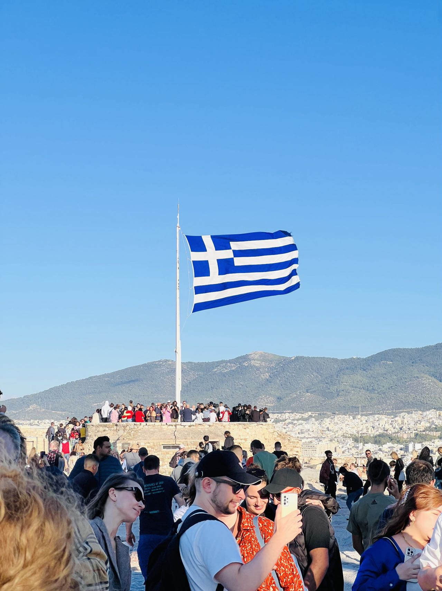

TRAVEL ✈️
I like to travel to different countries and places. I prefer natural scenery to cultural history because beautiful scenery. The beautiful scenery and the historical buildings can make me feel more relax and calm.
Compared with the mountains, I prefer the sea. I was most impressed by the sea of China, Bali, Greece and the United States.
I have been to many countries, including Japan, South Korea, Singapore, Thailand, Greece, Croatia, France, Germany, Italy, Sweden, and Belgium.

Greece 🇬🇷

Ghent Belgium 🇧🇪
IDOL ❤️
My idol is Chinese singer Cai Xukun, his hobbies are singing, dancing, rap, basketball. His most famous song is "Just Because You Are So Beautiful". , and I fell in love with him because I listened to this song.
In addition, However, there are often many people who don't like him on the Internet. In Chinese, we usually call them "小黑子", but I will not give up my love for my brother just because of their behavior.

HARRY POTTER ⚡️
I like the Harry Potter series of films very much. When I was a primary school student, I began to contact the Harry Potter series of films. Later, when I read the Harry Potter novels, I became more interested in this magical magical world. I yearn for it, and at the same time some profound philosophies conveyed in the book can often arouse my deep thinking.